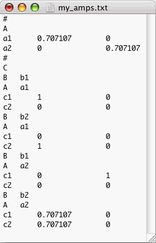

How To Write An Amplitudes File
An amplitudes file (amps file) is a TEXT file listing the transition matrices
of one or more nodes of a net. Using an amps file is recommended if you wish
to write a separate computer program, an amplitude generator, to calculate
the transition matrix of a Custom Node. If so, you should make the amplitude
generator write its results in the format described below, the format of
a Quantum Fog amps file. Then you should load the amps file into a Quantum
Fog project using the Import/Amplitudes... item of the Edit
menu.
As an example, consider a file called my_amps.txt, that contains
the following:

This amps file refers to a net with 3 or more nodes. Three of the nodes of
the net are: node A with states a1 and a2, node B with states b1 and b2,
and node C with states c1 and c2.
The specification of each transition matrix starts with a hash character.
The first line after the hash character is the name of the node whose transition
matrix follows in the amps file. The example above specifies the transition
matrix of nodes A and C.
-
Node A is a root node. The amplitudes of its two states a1 and a2 are,
respectively, 0.707107 + i*0 and 0 + i*0.707107.
-
Node C has four input states: (B, A) = (b1, a1), (b2, a1), (b1, a2) and (b2,
a2).
-
For the input state (B, A) = (b1, a1), the amplitudes of the two states c1
and c2 of C, are, respectively, 1 + 0i and 0 + 0i.
-
For the input state (B, A) = (b2, a1), the amplitudes of the two states c1
and c2 of C are, respectively, 0 + 0i and 1 + 0i.
-
For the input state (B, A) = (b1, a2), the amplitudes of the two states c1
and c2 of C are, respectively, 0 + 1i and 0 + 0i.
-
For the input state (B, A) = (b2, a2), the amplitudes of the two states c1
and c2 of C are, respectively, .707 + 0i and .707 + 0i.
Suppose that in the above amps file, you erase the 4 lines concerning the
input state (B, A) = (b1, a2) of node C. Quantum Fog will interpret this
omission to mean that: For the input state (B, A) = (b1, a2), the amplitudes
of the two states c1 and c2 of C are both zero. In general, if you import
an amps file which lists the transition matrix of a node C but which omits
some input states of C, then Quantum Fog will set to zero the amplitudes
of all states of C for the omitted input states.
 Pressing Export/Amplitudes... in
the File menu will produce a file that follows the format rules for
a Quantum Fog amps file. If no nodes are selected in the Main Window,
the file will contain the transition matrices of all the nodes of the net.
If some nodes are selected, the file will contain the transition matrices
of only those nodes that are selected. So if you want more examples of amps
files, you can ask Quantum Fog to generate some for you.
Pressing Export/Amplitudes... in
the File menu will produce a file that follows the format rules for
a Quantum Fog amps file. If no nodes are selected in the Main Window,
the file will contain the transition matrices of all the nodes of the net.
If some nodes are selected, the file will contain the transition matrices
of only those nodes that are selected. So if you want more examples of amps
files, you can ask Quantum Fog to generate some for you.
Next we will state the general rules that one must follow in writing an amps
file for Quantum Fog. Some of the terminology used below is defined in the
section entitled "Terminology-Alphabetic".
General Rules:
-
Everything from the beginning of the file up to the first hash character
will be ignored. Hence, you may include a header in the file, as long as
the header does not include any hash characters.
-
You must include for each node whose transition matrix you wish to specify:
-
A first line consisting of: [hash symbol] [white-spaces] [RETURN].
-
A second line consisting of: [node name] [white-spaces] [RETURN].
-
For each input state of the node (except for those input states that you
wish to omit as explained above):
-
For each parent of the node, a line consisting of: [name of parent node]
[white-spaces] [name of state of parent node] [white-spaces] [RETURN].
-
For each state of the node, a line consisting of: [name of state] [white-spaces]
[real part of amplitude for the state] [white-spaces] [imaginary part of
amplitude for the state] [white-spaces] [RETURN].
The order in which node names, input states, parent names and node state
names are enumerated does not matter.
[Table Of Contents]